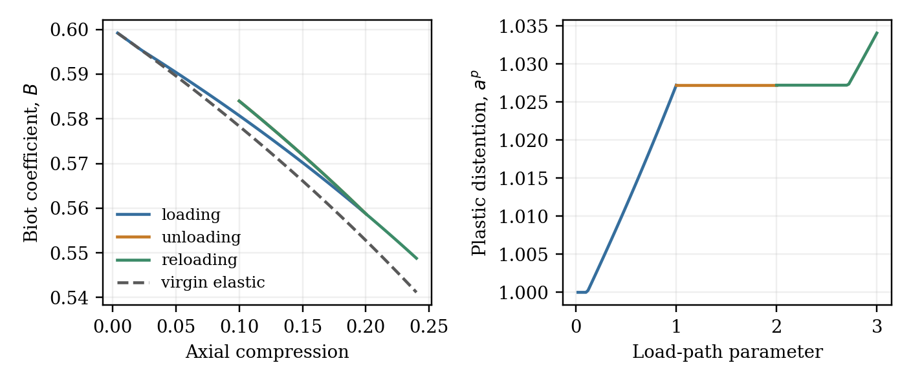
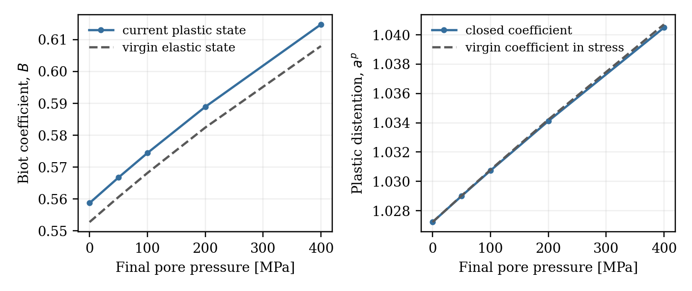
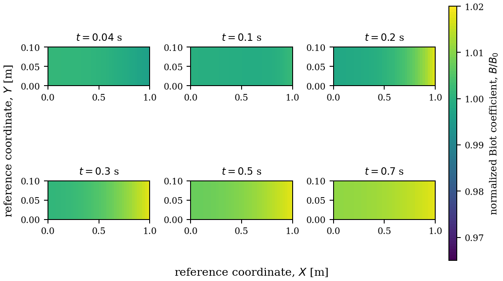
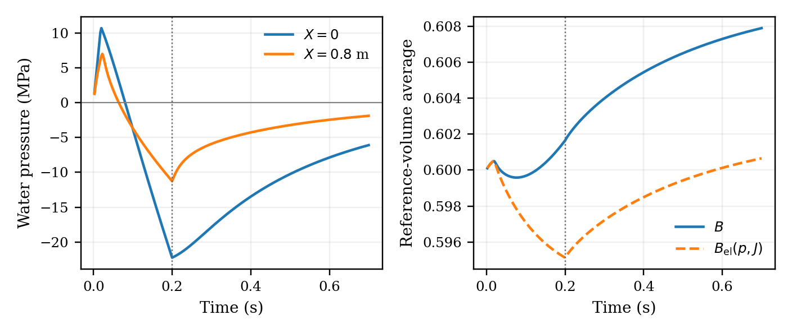
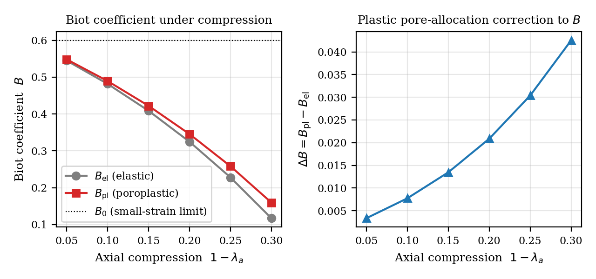
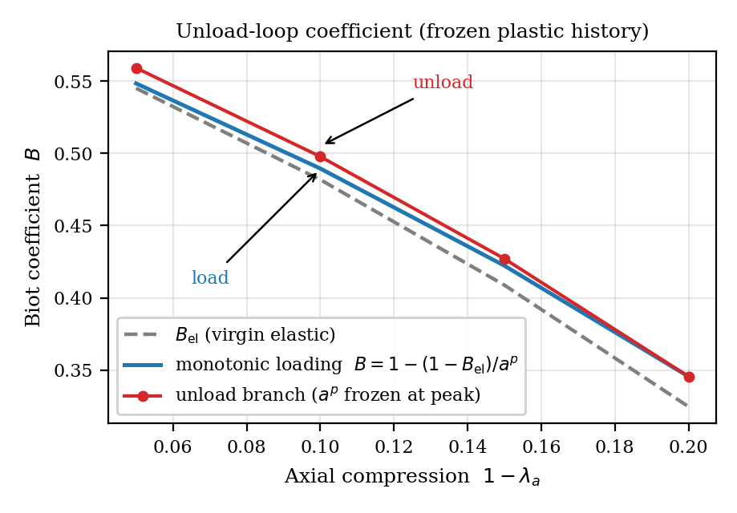
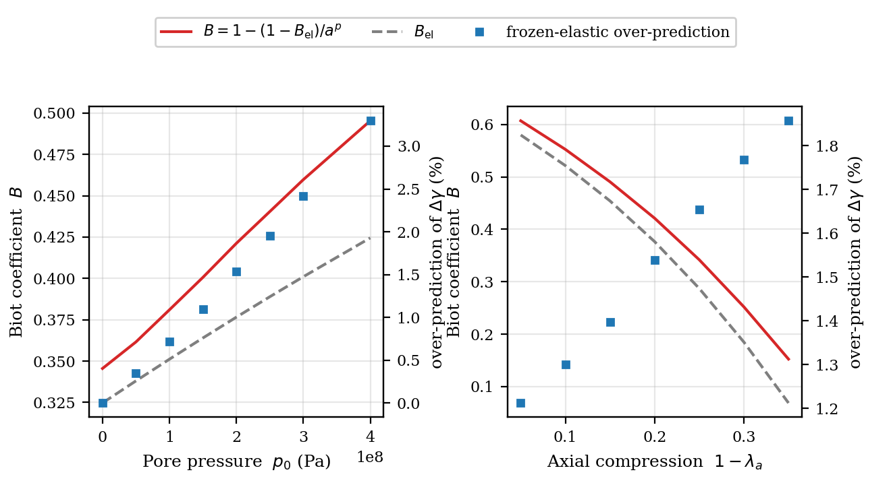
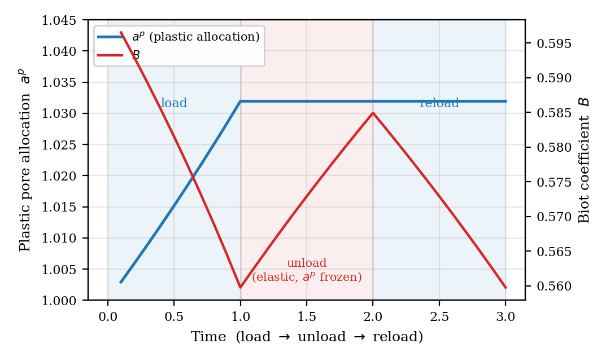

Plastic history and pressure coupling
The implicit constitutive update evaluates mineral compression, plastic distention, the Biot coefficient and driving stress at the same current state. True deformation measures intrinsic solid volume; distention describes its occupation of mixture volume.
With F = FᵉFᵖ and aᵖ = det Fᵖ, the mineral EOS uses Jᵉ = J/aᵖ. The matched logarithmic mineral and skeleton laws give the coefficient in closed form in the current states. The physical identity ρₛ = φₛρ̄ₛ is preserved. The coefficient is a fixed-pressure tangent at the current plastic state; the outer Newton derivative retains the active evolution of that state. The synthetic plastic paths use reference solid fraction 0.8 to retain positive pore volume throughout compression. Both material-point examples use initial cohesion 20 MPa and isotropic hardening modulus 100 MPa, with friction slope 0.6 and dilation slope 0.4, matching the coupled calculation. These are synthetic parameters, without material calibration.
Loading history

Plastic distention changes the elastic mineral response and carries history into the coefficient. Unloading freezes the plastic state; reloading beyond the previous yield state produces additional flow.
Pressure feedback

For the selected energy and loading path, the coefficient at the plastic state is above the virgin elastic value at the same total deformation. Its contribution to the single-prime stress restrains dilation at nonzero pressure. The comparison substitutes the virgin coefficient only in the driving-stress reconstruction and follows the same prescribed deformation and pressure path, initial cohesion, and isotropic hardening law.
Coupled compression and fluid exchange
The Mandel quarter-domain is compressed by 10% over 0.2 s and held to 0.7 s. The coupled calculation includes plastic pore-volume evolution in water storage, with friction slope 0.6, dilation slope 0.4, initial cohesion 20 MPa, and isotropic hardening modulus 100 MPa.

The ratio B / B0 uses the current coefficient including plasticity and the constant reference value B0 = 1 − K/Ks = 0.6. Values above one indicate an increase from the reference coefficient. Black curves bound elements with active plastic flow. The panels show computed element averages as a ratio, at 0.04, 0.10, 0.20, 0.30, 0.50, and 0.70 s, with the same times, color scale, and panel dimensions as the elastic contours. The raw element values are shown without smoothing.

Plastic dilation increases B at fixed local pressure and total volume by reducing the elastic volume ratio J/ap and the mineral-volume root. It also changes pore pressure and lateral expansion, so the elastic and plastic calculations share an axial displacement history but follow different coupled states. The same-state elastic comparator separates the direct plastic-history contribution from this change in coupled state. Its positive sign reflects the chosen dilative law; its magnitude has not been calibrated to a real material.
Whether this law reproduces both fluid exchange and Biot-coefficient evolution remains a physical question. Experiments support dilation-induced pressure reduction (Makhnenko and Labuz, 2015) and fluid uptake during pressure recovery (Brantut, 2020). These mechanisms do not establish that dilation must increase the Biot coefficient. Experiments on sandstone in a predominantly compactive regime show decreases and stabilization depending on stress path (Ingraham et al., 2017). Joint measurements of volume change, pressure, fluid exchange, and poroelastic response are needed to assess the present prediction. Hydraulic dilatant hardening is distinct from the prescribed isotropic hardening of the yield surface.
The perfectly plastic specialization loses ellipticity during the hold. The hardening law retains nonassociated flow and removes the observed spatial oscillations. Its modulus is a synthetic constitutive choice, not a calibrated material parameter. Cause, correction, and verification.
Plastic dilation increases pore volume and reverses fluid exchange from initial outflow to inflow. The history contribution remains positive during the hold. The single-phase water EOS is continued into tension; cavitation and desaturation are outside this synthetic test.
Coupled verification and refinement results · Numerical method and limits · Figure-generation script
POROPLASTIC_MPI_RANKS=8 make plastic-flow
make figuresVerification and reproduction
Independent checks cover physical mass, the mineral EOS, energy-derived stress, the closed coefficient against an independent implicit tangent and centered differences, exponential flow, yield, dissipation, superposed rotation and increment refinement. A separate PETSc test checks the active outer AD Jacobian. The elastic Mandel benchmark checks the analytical limit. The coupled plastic test additionally checks storage derivatives, water-mass change against boundary flow, temporal refinement, and recovery of the elastic response. Physical calibration remains a subsequent task.
- Implicit poroplastic material
- Material-point input
- Independent verification and data curation
- Verification results
- Manuscript and website figures
make plastic
make figuresThe supplementary monotonic and frozen-history examples use the same mineral equation and coefficient as the manuscript calculations.
Supplementary constitutive examples
These calculations use the same mineral equation and coefficient as the manuscript. The frozen-history curves compare the closed expression with an independent two-state tangent. In the pressure sweep, 5% compression at 200 MPa requires an apex branch; the domain check records its rejection and the plotted curves contain the supported smooth-cone solutions.



